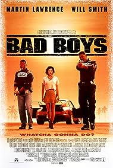
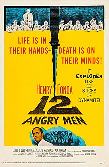

My favorite films
shawshank redemption

The Shawshank Redemption is a 1994 American prison drama film written and directed by Frank Darabont, based on the 1982 Stephen King novella Rita Hayworth and Shawshank Redemption.
The film tells the story of banker Andy Dufresne (Tim Robbins), who is sentenced to life in Shawshank State Penitentiary for the murders of his wife and her lover, despite his claims of innocence.
Over the following two decades, he befriends a fellow prisoner, contraband smuggler Ellis "Red" Redding (Morgan Freeman), and becomes instrumental in a money laundering operation led by the prison warden Samuel Norton (Bob Gunton). William Sadler, Clancy Brown, Gil Bellows, and James Whitmore appear in supporting roles.
I do love this movie as it is one of those that you can just watch over and over the narrasation over the film is brillantly done by Morgan Freeman and Tim Robbins as the main charector is just brillant.
bad boys
Bad Boys is a 1995 American buddy cop action comedy film directed by Michael Bay in his feature directorial debut, produced by Don Simpson and Jerry Bruckheimer, and starring Martin Lawrence, Will Smith, Téa Leoni, Tchéky Karyo, Theresa Randle, and Joe Pantoliano. The film follows Miami narcotics detectives Marcus Burnett (Lawrence) and Mike Lowrey (Smith) who are investigating the $100 million stolen packs of heroin and must order to protect a murder witness from an international drug dealer.
12 angry men
12 Angry Men is a 1957 American independent[6][7] legal drama film directed by Sidney Lumet in his feature film debut, adapted from a 1954 teleplay of the same name by Reginald Rose.[8][9] The film tells the story of a jury of 12 men as they deliberate the conviction or acquittal of a teenager charged with murder on the basis of reasonable doubt; disagreement and conflict among the jurors forces them to question their morals and values. It stars Henry Fonda (who also produced the film with Reginald Rose), Lee J. Cobb, Ed Begley, E. G. Marshall, and Jack Warden.
its a wonderful life
.jpeg)
t's a Wonderful Life is a 1946 American Christmas supernatural drama film produced and directed by Frank Capra. It is based on the short story and booklet "The Greatest Gift" self-published by Philip Van Doren Stern in 1943, which itself is loosely based on the 1843 Charles Dickens novella A Christmas Carol.[4] The film stars James Stewart as George Bailey, a man who has given up his personal dreams in order to help others in his community and whose thoughts of suicide on Christmas Eve bring about the intervention of his guardian angel, Clarence Odbody.[4] Clarence shows George all the lives he touched and what the world would be like if he had not existed.
star wars
Star Wars (later retitled Star Wars: Episode IV – A New Hope) is a 1977 American epic space opera film written and directed by George Lucas, produced by Lucasfilm and distributed by Twentieth Century-Fox. It is the first film released in the Star Wars film series and the fourth chronological chapter of the "Skywalker Saga". Set "a long time ago" in a fictional galaxy ruled by the tyrannical Galactic Empire, the story follows a group of freedom fighters known as the Rebel Alliance, who aim to destroy the Empire's newest weapon, the Death Star. When the Rebel leader Princess Leia is abducted by the Empire, Luke Skywalker acquires stolen architectural plans of the Death Star and sets out to rescue her while learning the ways of a metaphysical power known as "the Force" from the Jedi Master Obi-Wan Kenobi. The cast includes Mark Hamill, Harrison Ford, Carrie Fisher, Peter Cushing, Alec Guinness, Anthony Daniels, Kenny Baker, Peter Mayhew, David Prowse, and James Earl Jones.